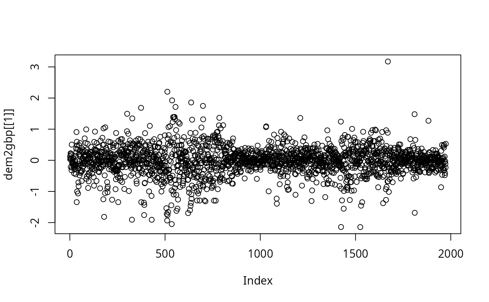
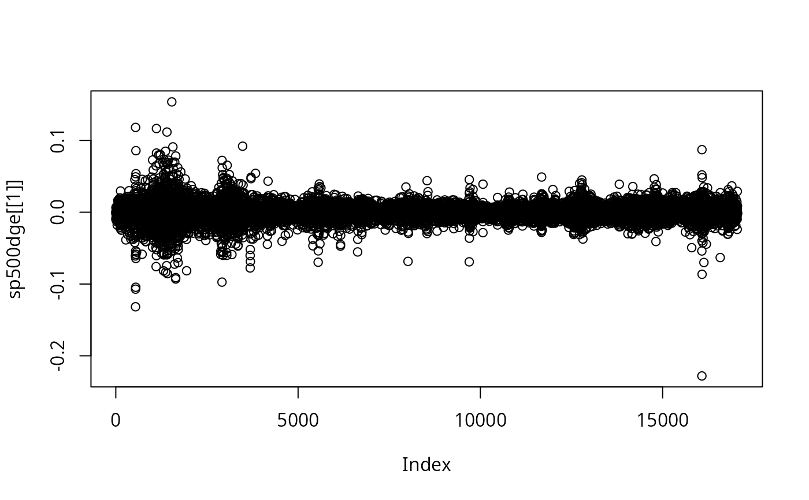

Time series datasets
fGarchData.RdDatasets used in the examples, including DEM/GBP foreign exchange rates and data on SP500 index.
Format
dem2gbp is a data frame with one column "DEM2GBP" and
1974 rows (observations).
sp500dge is a data frame with one column "SP500DGE" and
17055 rows (observations).
Details
The data represent retuns. No further details have been recorded.
Further datasets are available in the packages that fGarch
imports, see fBasicsData and
TimeSeriesData.
Examples
data(dem2gbp)
head(dem2gbp)
#> DEM2GBP
#> 1 0.12533286
#> 2 0.02887427
#> 3 0.06346177
#> 4 0.22671922
#> 5 -0.21426695
#> 6 0.20285367
tail(dem2gbp)
#> DEM2GBP
#> 1969 -0.47823610
#> 1970 -0.40853965
#> 1971 -0.03046769
#> 1972 -0.11754582
#> 1973 -0.23127105
#> 1974 0.52804687
str(dem2gbp)
#> 'data.frame': 1974 obs. of 1 variable:
#> $ DEM2GBP: num 0.1253 0.0289 0.0635 0.2267 -0.2143 ...
plot(dem2gbp[[1]])

data(sp500dge)
head(sp500dge)
#> SP500
#> 1 0.0000000
#> 2 -0.0022548
#> 3 -0.0096400
#> 4 0.0062482
#> 5 0.0011319
#> 6 -0.0102332
tail(sp500dge)
#> SP500
#> 17050 0.0072311
#> 17051 -0.0008122
#> 17052 -0.0020079
#> 17053 0.0090668
#> 17054 -0.0004287
#> 17055 -0.0026266
str(sp500dge)
#> 'data.frame': 17055 obs. of 1 variable:
#> $ SP500: num 0 -0.00225 -0.00964 0.00625 0.00113 ...
plot(sp500dge[[1]])
